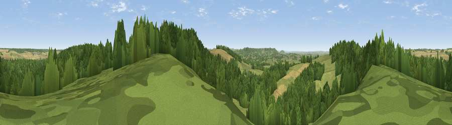

Viewpoint near Fonthill Gifford
#23575 in England · top 39% of its area beats it · near Fonthill GiffordThe view, rendered

A 360° render of this exact spot computed from the terrain model, tree cover and land cover — summer colours, afternoon light, calibrated against photographs of famous viewpoints. Real trees, hedges and buildings will differ in detail.
The panorama
Grey silhouette: terrain skyline in each direction (720 bearings, Earth curvature and refraction included). Dashed green: skyline with trees (+15 m) and buildings (+8 m) as obstacles. Blue strip: how far the ground is visible on each bearing.
Where the view opens
Wedge length = distance to the farthest visible ground on that bearing (vegetation-aware). Rings at 10, 25 and 50 km.
What fills the view
63% woodland · 26% grassland · 11% cropland
Angular shares of the visible panorama (visual magnitude), not map area. Landscape diversity 0.39 (0–1 Shannon).
Key numbers
More beautiful places nearby
The staircase of upgrades: each row has a higher view potential than everything closer. Driving times are estimates from straight-line distance, calibrated against real road routing — check an actual route before setting out.
| Place | Direction | Drive | Score |
|---|---|---|---|
| Viewpoint near Fonthill Gifford | SSE · 1 km | ~2 min | 64.2 |
| Haddon Hill | WNW · 3 km | ~8 min | 64.6 |
| Viewpoint near West Knoyle | WNW · 5 km | ~10 min | 66.4 |
| Viewpoint near Motcombe | SW · 7 km | ~14 min | 66.7 |
| Little Hill | SW · 7 km | ~14 min | 70.0 |
| Viewpoint near Monkton Deverill | NW · 10 km | ~19 min | 70.9 |
| Viewpoint near Berwick St John | SSE · 10 km | ~19 min | 71.8 |
| Monk's Down | SSE · 10 km | ~19 min | 74.4 |
51.07577, -2.13234 · source: screening · position refined by local search. Computed location — check access rights before visiting.